Game Research — Super Smash Bros. Ultimate
Making a complex game menu easier to navigate through user research and information architecture.


Making a complex game menu easier to navigate through user research and information architecture.
This was a solo project. Super Smash Bros. Ultimate is a dense, menu-heavy fighting game, so I ran an open card-sorting study with 10 participants to understand how players group its content. The results revealed a mismatch between the game’s existing information categories and players’ mental models. I used those findings to guide a new information architecture and design a new home page menu.
I examined whether menu text, icons, and visual indicators were legible, visible, and meaningful. The largest central graphic is not clickable, and “Smash” does not explain the modes inside; “a great place to get started” does not help players predict what they will play.
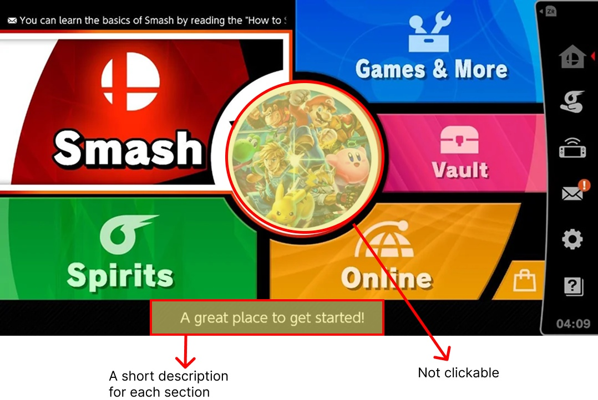
“Smash” and “Online” both contain a mode called “Smash,” creating duplicate labels. The duplicated naming and vague labels made it hard to understand where different features were located.
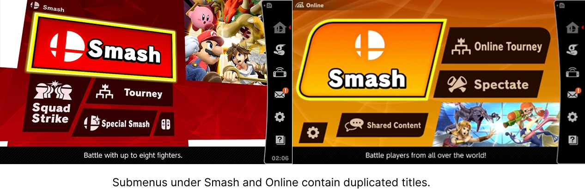
Other labels, such as “Vault” (Sounds, Replays, Records, and Tips) and “Games & More” (including Training), did not help players predict what was inside, increasing guesswork and trial-and-error. Many of these names come from earlier Smash titles. Newer systems such as Spirits also rely on prior knowledge, so several categories assume familiarity that first-time players do not have.
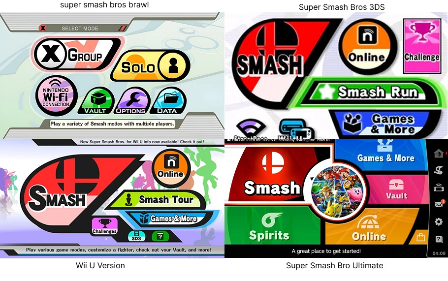
I ran an open card sort in UXtweak with 10 participants who had some Smash experience but were not experts. The study used 20 cards focused on the main menu, and each card included the in-game description to match the real experience. Participants grouped items in whatever way made sense and created their own category labels.
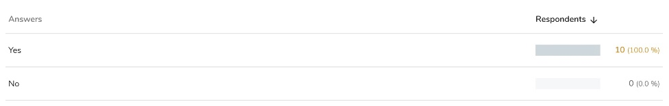
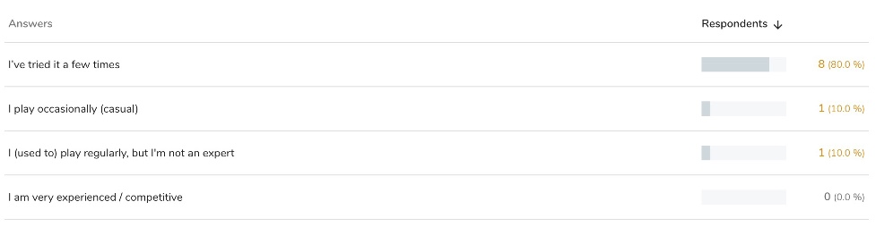
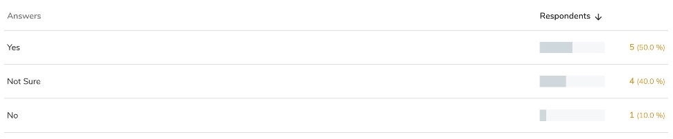
I compared the card-sorting results with a recreated original sitemap, using darker colors for frequently used category names and highlighting cards that more than half of participants grouped together.
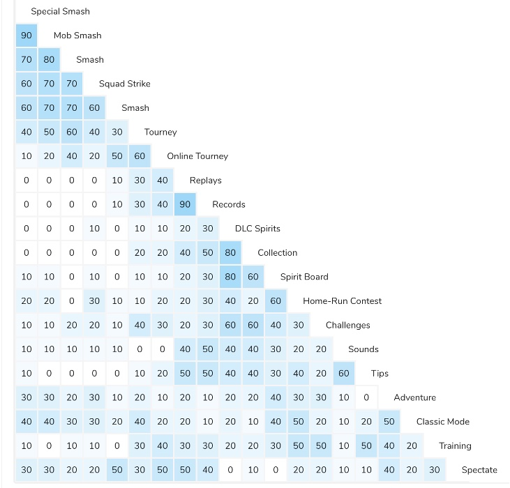
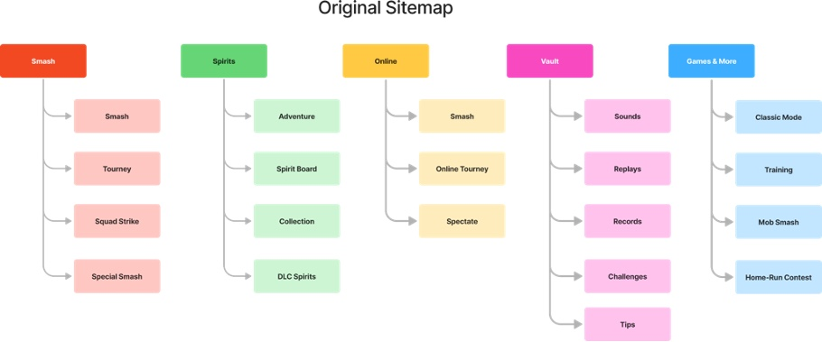
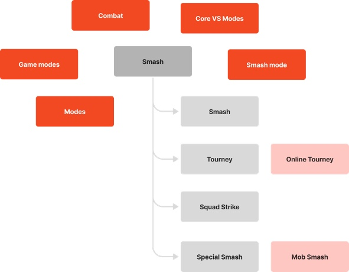
“Mode” appeared often; 9/10 participants grouped Mob Smash here.
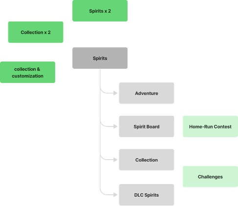
“Collection” and “Spirit” were common; 6/10 grouped Home-Run Contest with Spirit Board.
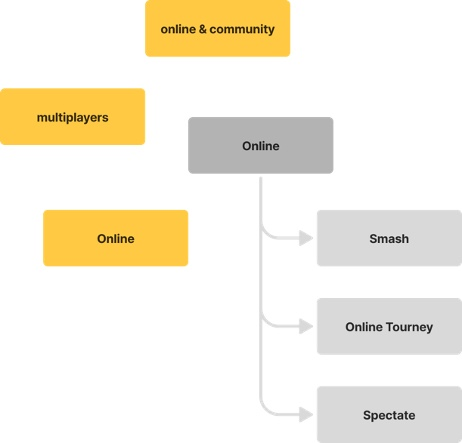
Relatively high agreement, with labels such as “Online & Community” and “Multiplayers.”
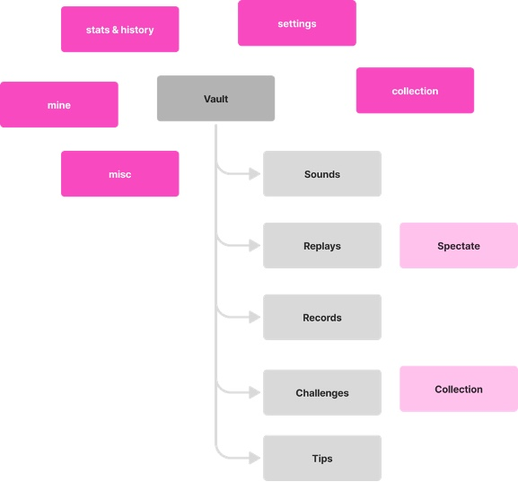
Participants described it as “Stats & History,” “Mine,” or “Collection.”
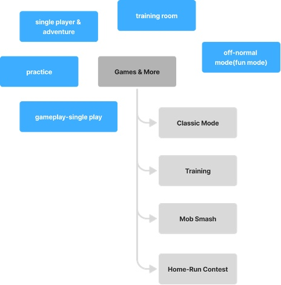
The most inconsistent category; few participants grouped the original items together in a consistent way.
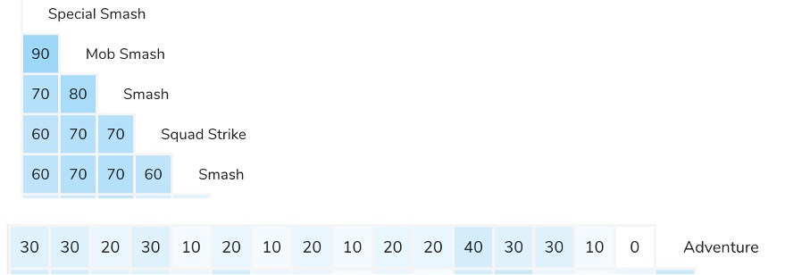
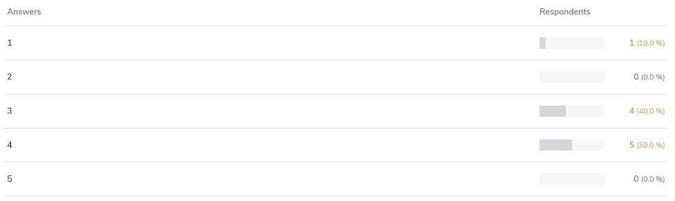
“There are some words that I couldn’t remember its context in the game, that would be confusing for me.”
“Some of the cards seem to be redundant (e.g. the 2 ‘Smash’ cards).”
Use Local Smash and Online Smash so players can tell the two modes apart.
Replace “Games & More” and “Vault” with clearer, descriptive labels, separating game modes from training.
Put the story mode on the main menu with a clearer label such as Story Mode or Adventure.
 04
04Rebuilt the U of T Master of Information site to remove invisible cognitive friction and screen-reader confusion — beyond AODA/WCAG compliance.
View case study → 06
06A dual student / teacher platform for everyday food choices — 1st place, Seneca Hackathon 2025.
View case study →